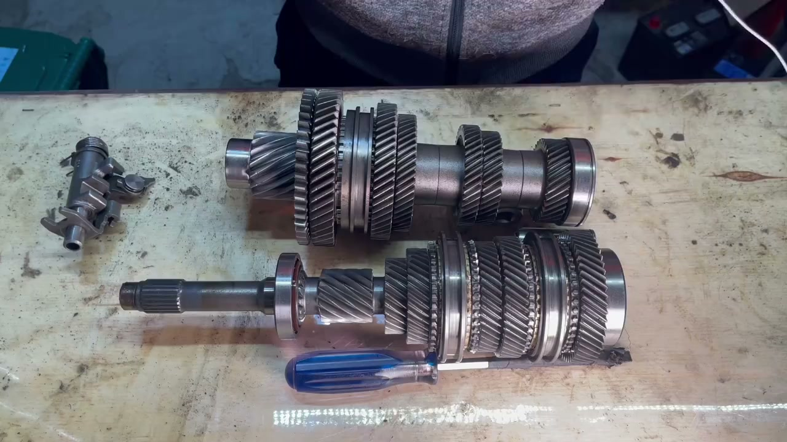
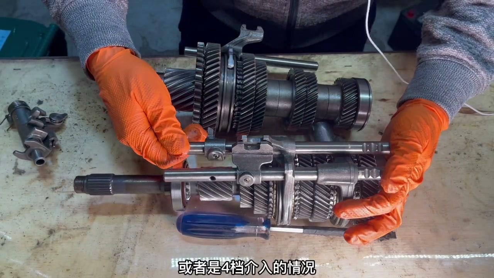
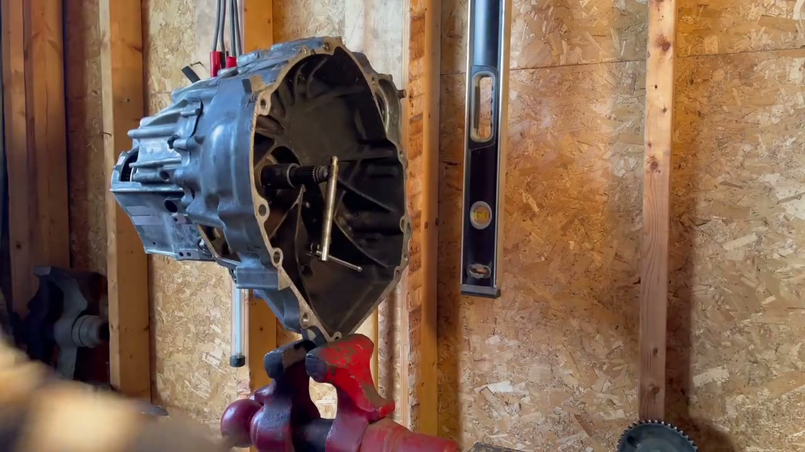
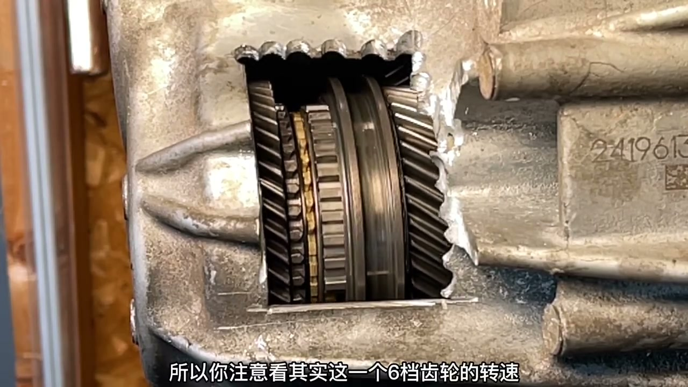
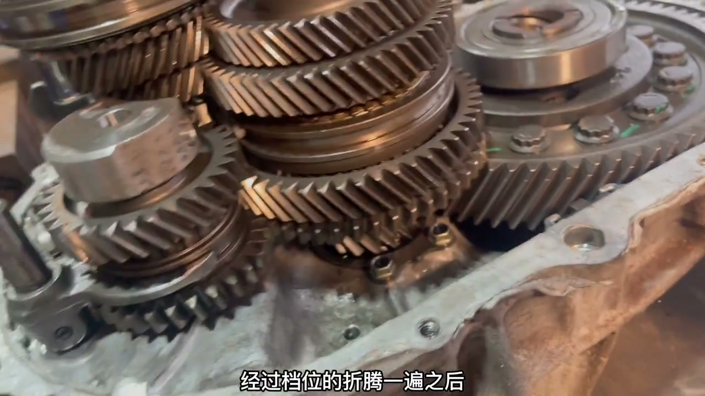
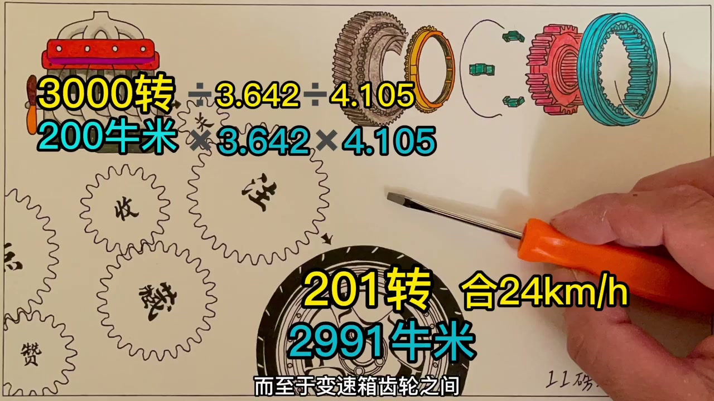
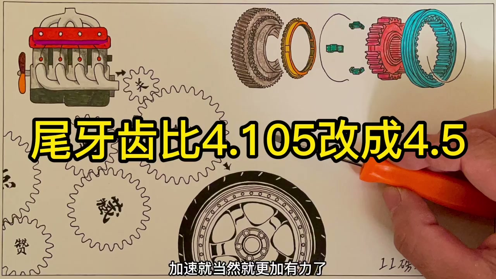
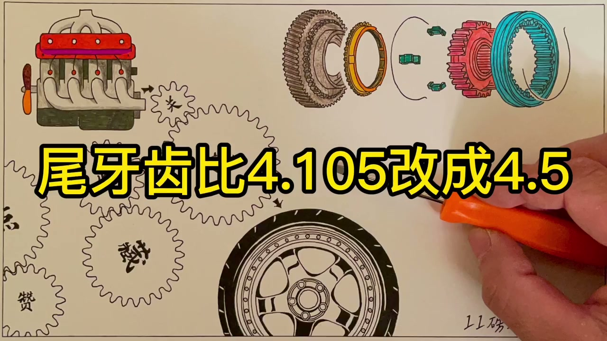

01
中文
拨叉很像一个插板，负责左右拨动同步器。
EN
A shift fork looks like a paddle and slides the synchronizers.
表达提示shift fork（拨叉）

Scene English · 汽车 · 手动变速箱
Hardcore Teardown: Manual Transmission Basics (Part 2)
🎧 语音讲解
Forks Move the Synchronizers
情境拨叉像插板一样卡在同步器的结合套上，左右拨动同步器来选择档位。
拨叉很像一个插板，负责左右拨动同步器。
A shift fork looks like a paddle and slides the synchronizers.
表达提示shift fork（拨叉）
它分别卡在各自的结合套上，总共有三个。
Each fork sits in a sleeve's groove—three in total.
表达提示three forks（三个拨叉）
空挡时，所有拨叉都在同步器最中间的位置，没有档位齿轮被锁死。
In neutral, every fork sits centered and no gear is locked.
表达提示neutral（空挡）
shift fork（拨叉
three forks（三个拨叉

From Stick to Fork
情境挡杆的左右游走对应选择三组拨叉中的哪一组，上推下拉对应拨叉往哪个档位介入。
挡杆的铁块在凹槽里来回游动，其实是在三个拨叉之间待命。
The shifter block slides in its gate, choosing among the three forks.
表达提示shift gate（换挡槽）
挡杆往上一推，对应的拨叉把同步器推着和一档齿轮结合。
Pushing the stick up makes the fork engage first gear.
表达提示engage first gear（挂一档）
往下推就挂入二档，停留中间再推就是三档或四档。
Push down for 2nd; stay centered and push for 3rd or 4th.
表达提示stay centered（停留中间）
shift gate（换挡槽
engage first gear（挂一档

Cutting Open the Case
情境把变速箱壳体切开一个窗口，装上摇柄模拟发动机输入，就能直接看到换挡时内部的实际动作。
把变速箱壳体切开一个窗口，能观察到换挡时实际的内部动作。
Cutting a window in the case reveals the real shifting motion.
表达提示cut a window（切开口子）
我给输入轴装上小摇柄，手摇来模拟发动机的输入。
A hand crank on the input shaft simulates the engine.
表达提示simulate the engine（模拟发动机）
慢动作下可以看到：先挂空挡，同步器和轴一起转，左右档位齿轮空转。
In slow motion: in neutral, the sync spins with the shaft while side gears freewheel.
表达提示freewheel（空转）
cut a window（切开口子
freewheel（空转

Sync First, Then Lock
情境推进五档后，六档齿轮被输入轴上的固定齿轮带着空转，转速不同；换六档时同步环先把速度带下来再锁死。
推进五档，五档齿轮被同步器定死，动力传到了输出轴。
Into 5th, the synchronizer locks the gear and power reaches the output shaft.
表达提示reach the output（传到输出轴）
六档齿轮被输入轴上的固定齿轮带着空转，因为齿比不同转速也不同。
The 6th gear freewheels at a different speed because the ratios differ.
表达提示different speeds（转速不同）
换六档时，结合套先把黄色同步环压上去，靠锥面摩擦快速把速度带下来。
Shifting to 6th, the sleeve presses the cone ring to drag speed down by friction.
表达提示drag the speed（把速度带下来）
先同步再彻底锁上，完成换挡。
Sync first, then lock fully—that completes the shift.
表达提示sync then lock（先同步再锁死）
reach the output（传到输出轴
different speeds（转速不同

The Final Drive
情境尾牙学名主减速器：既说明位置（汽车尾部、一牙一牙）也说明作用（最后再减一次速）。
变速把动力传到车轮前，还差最后一个关键环节——尾牙。
Before power reaches the wheels, one last key part remains—the final drive.
表达提示final drive（主减速器）
尾牙这个名字说清楚了位置和形状，在尾部、一牙一牙的。
The name 'tail tooth' describes its position at the rear and its toothed shape.
表达提示tail tooth（尾牙）
主减速器说明它的作用：主要靠它来最终减速。
It's called a reducer because its job is the final speed reduction.
表达提示final reduction（最终减速）
发动机动力经过档位后转速还是太快、扭矩太小，不足以驱动车辆。
After the gears, speed is still too high and torque too low to drive the car.
表达提示drive the car（驱动车辆）
final drive（主减速器
tail tooth（尾牙

The 4.105 Final Ratio
情境这台变速箱中传比4.105：不管几档，输出到车轮前转速再减4.105倍，扭矩再增4.105倍。
输入轴小齿轮带动一个特别大的齿轮，这台变速箱的中传比是4.105。
A small pinion drives a huge gear—this box has a 4.105 final ratio.
表达提示final ratio（中传比）
经过变速箱变速变矩之后，转速还要再减掉4.105倍。
After the gearbox, speed is divided once more by 4.105.
表达提示divide by 4.105（再减4.105倍）
扭矩也就要对应增加4.105倍，这才是真正到驱动轮上的最终数值。
Torque multiplies by 4.105—that's the final number at the drive wheels.
表达提示final torque（最终扭矩）
final ratio（中传比
divide by 4.105（再减4.105倍

Upgrading the Final Drive
情境改装尾牙就是把齿比从4.105改成4.5，所有档位扭矩同比例放大、加速更猛，但所有档位车速同比减小。
改装尾牙指的就是改装尾牙的齿比，比如从4.105改成4.5。
Upgrading the final drive means changing its ratio, say from 4.105 to 4.5.
表达提示upgrade the ratio（改装齿比）
改一个尾牙，相当于所有档位的扭矩都一起提高了。
One change boosts torque in every gear at once.
表达提示boost all gears（所有档位提升）
代价就是所有档位的车速都会同比减小。
The cost: top speed in every gear drops by the same factor.
表达提示top speed drops（车速下降）
尾牙改大主要针对发动机动力较小的车，牺牲极速换加速。
A taller final drive suits low-power engines—trading top speed for punch.
表达提示trade speed for punch（以速换力）
upgrade the ratio（改装齿比
boost all gears（所有档位提升

Reverse Has No Synchro
情境倒挡通过一根单独的小轴实现反向，没有同步器是直齿啮合，所以要停稳后才能挂入，噪音也更大。
倒挡是单独一根小轴，齿轮一直和输入轴啮合转动。
Reverse uses a separate shaft whose gear always meshes with the input.
表达提示separate shaft（单独小轴）
一般的倒挡没有同步器，是齿轮直接卡死。
Reverse typically has no synchronizer—gears bite directly.
表达提示no synchro（没有同步器）
这就是为什么挂倒挡一定要等车停稳，否则马上打齿。
That's why you must come to a full stop before selecting reverse.
表达提示come to a stop（停车挂挡）
倒挡是直齿设计，噪音比较大，所以倒车能听到嗡嗡声。
Reverse gears are straight-cut, so they whine loudly.
表达提示straight-cut（直齿）
separate shaft（单独小轴
no synchro（没有同步器
说拨叉
说挡杆对应
说先同步再锁死
说尾牙
说改装尾牙
说倒挡
倒挡必须停稳挂。
尾牙是最后一道减速。
大尾牙配强动力会打滑。
空转齿轮仍被带着转。
先同步再咬合。